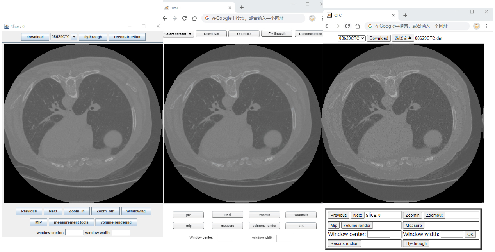
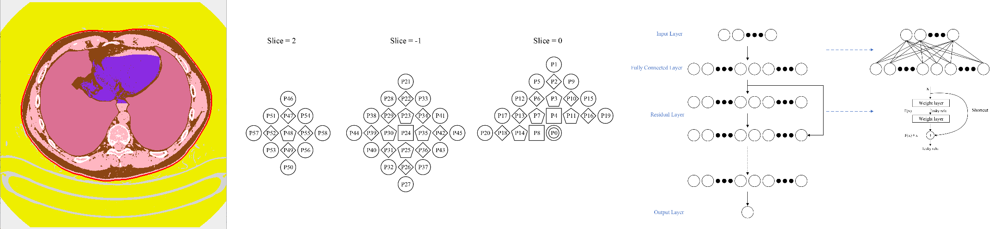

| Add.: NO.152 Luoyu Road, Central China Normal University, Wuhan, Hubei, P.R.China 430079 Email: wanghsin@mails.ccnu.edu.cn, Tel.: (86)13627283132 |
Biography
I am currently a final-year master student (with three-year research experience) at Central China Normal University (CCNU), under the supervision of Prof. Qiusha Min. Previously, I received my B.Eng. degree of Food Science & Engineering from Nanyang Institute of Technology (NYIST) in 2018. Simultaneously, I was an exchange student at the Providence University (PU) in 2016. Please check my CV for more details.
My research interest lies at the intersection of machine learning, deep learning, computer vision, action recognition, image segmentation, and image compression.
Education
| 2018.09 — Pres. | M.Eng., Faculty of Artificial Intelligence in Education, Central China Norma University (CCNU) Supervisor: Qiusha Min |
| 2016.02 — 2016.07 | Exchange Student, College of Science, Providence University (PU) |
| 2014.09 — 2018.07 | B.Eng., Zhang Zhongjing College of Chinese Medicine, Nanyang Institute of Technology (NYIST) |
Publications
| Refereed Journals |
| [1] Min Q*, Wang X*, Huang B, et al. Web-Based Technology for Remote Viewing of Radiological Images: App Validation[J]. Journal of Medical Internet Research, 2020, 22(9): e16224. (SCI) |
| *these authors contributed equally |
 |
| [2] Qiusha Min, Xin Wang. Lossless medical image compression based on region segmentation and residual neural network. (Under Review) |
 |
| Patents & Software copyright |
| [3] Remote medical image access system based on Java technology, Qiusha Min, Xin Wang, Software copyright, 2019SR0982502 [4] Remote medical image access system based on HTML5 technology, Qiusha Min, Xin Wang, Software copyright, 2019SR0982496 [5] Remote medical image access system based on Flash technology, Qiusha Min, Xin Wang, Software copyright, 2019SR0982505 |
Skills
Machine Learning and Deep Learning:I also learned machine learning and deep learning on the Coursera online platform (fall, 2018).| 1. Machine Learning on the Coursera platform provided by Stanford University Lectures: Andrew Ng https://coursera.org/share/d7f47b1a7c7d81c320fe51063c5835b7 |
| 2. Deep Learning on the Coursera platform provided by Stanford University Lectures: Andrew Ng, Teaching Assistant-Katanforoosh & Teaching Assistant-Younes Bensouda Mourri https://coursera.org/share/48f87b46b1c97960834111d302c12513 |
| (1) Neural networks and deep learning https://coursera.org/share/ce00a97104191ccf5a557e7fd3eddfc6 (2) Improving deep neural networks: hyperparameter tuning, regularization and optimization https://coursera.org/share/0af3f8948a86df414a79b6eaa660b542 (3) Structuring machine learning projects https://coursera.org/share/e3a947bc7d7f6abf0ca05ad1b6d16845 (4) Convolutional neural networks https://coursera.org/share/4529173a2a2bb6928ed6baf24045b4e9 (5) Sequence models https://coursera.org/share/b2548625abfa1480822ca3922e1a5ec2 |